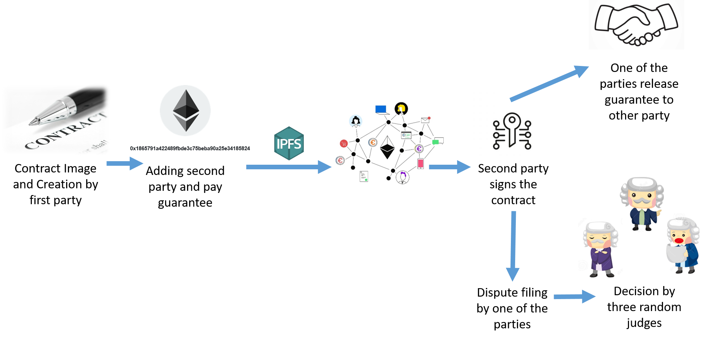

Disputeable Contract
The purpose of this smart contract is to let two parties have an on-chain real contract where one of the parties will put Ether as a guarantee. The other party can release the held Ether whenever they want according to the agreement they have with the first party. In case of disagreement between the two parties, they can ask for dispute resolution. There will be three judges that will go back to the on-chain real contract and make a decision based on that. The judges for any Disputeable Contract will be chosen randomly from a pool of judges. The dispute resolution will be according to the dominant decision by the three judges.

Features
- The entity who will be providing Ether as guarantee, will create the Disputeable Contract where they will enter the address of the other party and send also the Ether value that will be held as a guarantee. After creating the Disputeable Contract, the user will get an id to refer to it.
- The judges are chosen randomly from a pool of judges that can be controlled by the smart contract owner.
- The second party will have to sign the contract to make the Disputeable Contract valid.
- The first party can withdraw their Ether as long as the second party did not sign the Disputeable Contract.
- Once the second party signs the Disputeable Contract, they will be able to release the held Ether manually according to the agreement they have with the first party. In addition, the first party will be
able to pay the held Ether to the second party.
- At any time, if the Ether is not released or paid, any party can ask for dispute resolution
- When a dispute resolution is filled, the judges will have to refer to the on-chain real contract to make a decision whether to release the held Ether or pay it to the second party.
- Each judge receives a percentage of the held Ether to compensate them for the time spent on judging and the Gas used to send the final decision to the blockchain.
- No fees at all if there is no dispute filled.